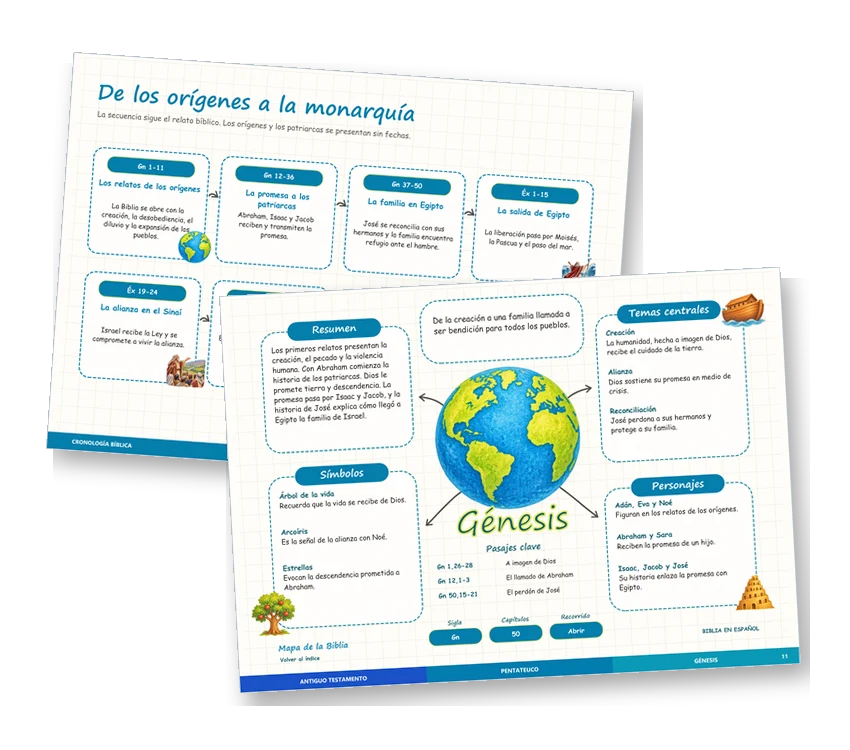
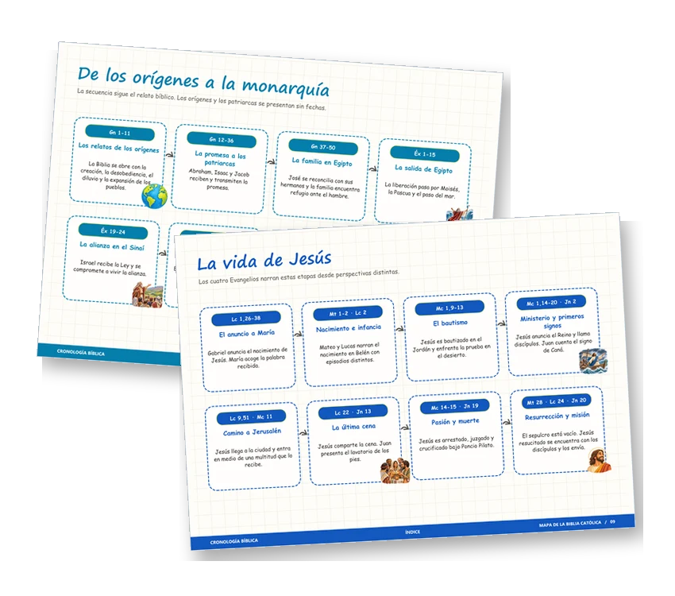
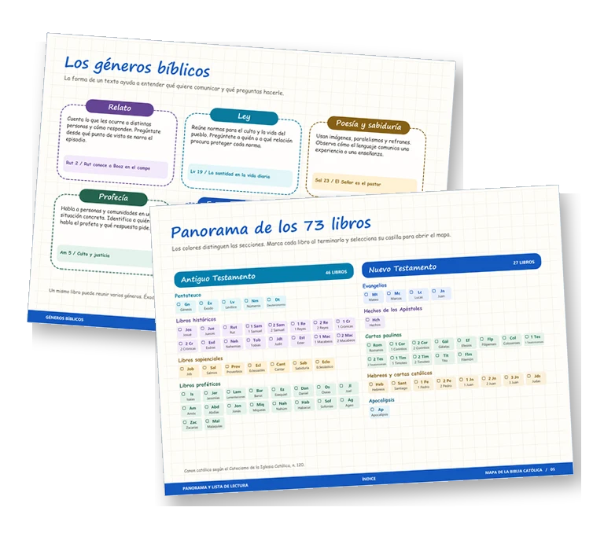
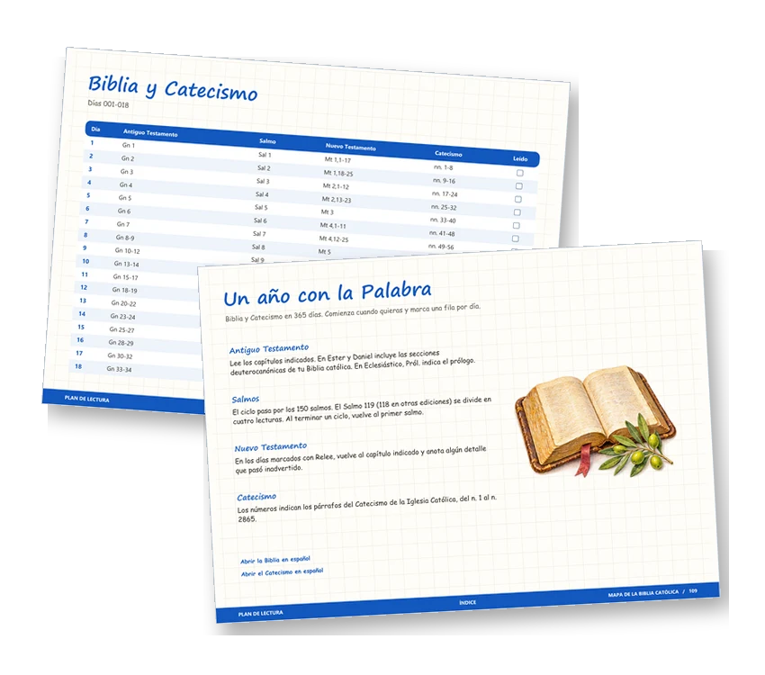
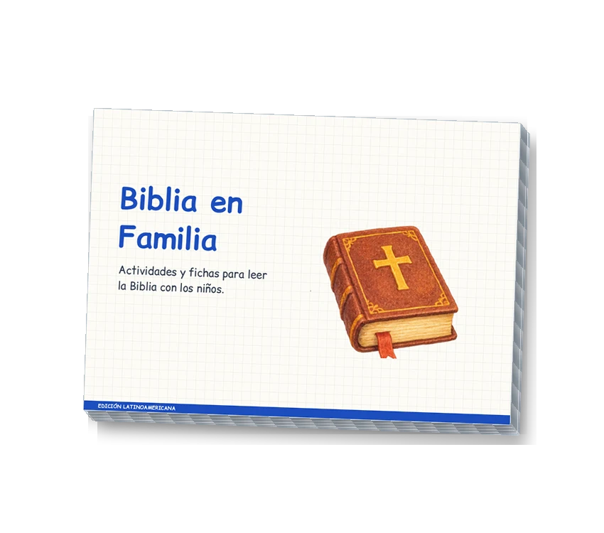

35.000+ católicos
Lo que dicen del Mapa de la Biblia
El Mapa de la Biblia es increíble y miles de católicos están de acuerdo.
Una forma fácil y aprobada por miles de católicos para aprender la Palabra de Dios de forma sencilla.
← Desliza para ver →
35.000+ católicos
El Mapa de la Biblia es increíble y miles de católicos están de acuerdo.
El Mapa de la Biblia son resúmenes visuales de la Biblia, según la tradición católica, que te preparan para explorar y comprender la Palabra de Dios en su totalidad, simplificando la riqueza de las enseñanzas de cada libro sagrado.
Con el Mapa de la Biblia podrás dedicarte al estudio diario de la Biblia con entusiasmo, contando con una guía eficaz para orientarte en las Escrituras y en sus múltiples dimensiones.
Esta es la mejor forma de profundizar tu conocimiento bíblico: estudiar con confianza y vivir una profunda transformación espiritual sumergiéndote en las enseñanzas de cada libro de la Sagrada Escritura.
Explora cada uno de los 73 libros de la Biblia de forma clara y estructurada, con resúmenes y elementos esenciales que facilitan la comprensión de la Palabra de Dios.
En cada libro tendrás:

Comprende la secuencia de los principales eventos bíblicos en orden cronológico, para facilitar la comprensión de la historia de la salvación y su conexión a lo largo de los siglos.

Descubre cómo está organizada la Biblia, explorando sus divisiones, secciones y categorías literarias. Esta guía ayuda a visualizar la conexión entre los libros y el mensaje central de las Escrituras.

Plan de Lectura de la Biblia con objetivos capítulo por capítulo que te animan a profundizar tu estudio bíblico y a fortalecer tu intimidad con Dios, incluso si tienes poco tiempo o llevas una vida acelerada.

"Antes me sentía perdido al intentar entender algunos libros de la Biblia. ¡El Mapa me dio una visión panorámica que marcó toda la diferencia!"
José Marcos
"El Mapa de la Biblia transformó mi estudio bíblico. Ahora logro entender los contextos, las conexiones y el mensaje de cada libro."

Fernanda Silva
"Entender el contexto de cada libro me ayudó a aplicar las enseñanzas de la Biblia en mi vida. ¡Estoy muy agradecido por este material!"
Roberto Lima
Actividades y fichas para leer la Biblia con los niños. Con historias bíblicas explicadas de forma sencilla, preguntas para conversar en familia y fichas para trabajar en casa o en la catequesis. Ideal para padres y catequistas que quieren acercar a los más pequeños a la Palabra de Dios.

Conoce a más de 20 santos, cada uno con su oración y la fecha en que se celebra. Una guía práctica para acercarte a los santos de tu devoción y conocer el ejemplo de su vida.
Este planner está pensado para profundizar tu experiencia con la Palabra de Dios a través de la Lectio Divina, profundizando en la lectura, meditación, oración y contemplación de las Escrituras.
¡Más de 250 páginas exclusivas del Génesis al Apocalipsis, según la tradición católica!
Tenemos tanta confianza en la calidad de nuestro material que te ofrecemos una garantía de satisfacción de 14 días: si no quedas totalmente satisfecho, te devolvemos el 100% de lo que pagaste dentro de ese plazo.
Esta garantía es un beneficio adicional que ofrecemos y no afecta los derechos que la ley de tu país te reconoce como consumidor. Más información.